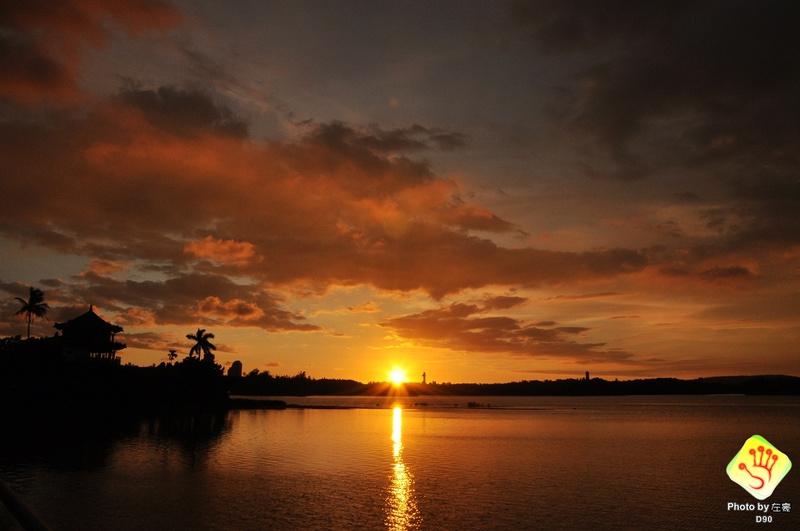

yuanzhao tu for code.mp4 from Yuanzhao Tu on Vimeo.
Introduction
The audience is allowed to do what the characters in the painting do, to feel what the characters in the painting feel, and to think what the characters in the painting think.
Concept and Background Research
"The River of Immortality" is a famous ancient poem that is used in the beginning of "Romance of the Three Kingdoms". The poem is about a conversation between two ancient people drinking wine while discussing the deeds of heroic figures from a much older history. In this moment, the two people in the poem become ancient in the eyes of the modern people watching this work. What the audience does is no different from what the people in the poem do.
The left half of the poem chants through historical phenomena that the universe is eternal, the rivers never end, and the mountains are everlasting, while generations of heroic figures are all fleeting. In the right half of the poem, the poet uses the rise and fall of the past dynasties as a laughing matter to help him enjoy the wine, showing his contempt for the world and his indifferent and liberal feelings.
The whole lyric has a generous and tragic tone, and when you read it, you feel that it evokes a lot of emotions and a lot of feelings.
At one point it was specifically pointed out that the poem is about two characters viewing a beautiful scene and drinking wine and making a pair. So, the purpose of this project is to try to create a deeper experience from the narrative by visualizing the scene in the poem, allowing the reader or viewer to see the same images as the characters in the poem, and, to do something similar to the poem (discussing the ancient people).
Here is a translations of the poem.
On and on the Great River rolls, racing east. Of proud and gallant heroes its white-tops leave no trace, As right and wrong, pride and fall turn all at once unreal. Yet ever the green hills stay To blaze in the west-waning day. Fishers and woodmen comb the river isles. White-crowned, they’ve seen enough of spring and autumn tide To make good company over the wine jar, Where many a famed event Provides their merriment. — Tr. Moss Roberts
Technical Implementation
I have tried a lot to create the scene in the poem. I tried to use wandering particles to create a "wave" effect, but it didn't look like a wave, the particles were too scattered, and simply increasing the number of particles made the whole program very jerky, as shown below. So I changed it to rainfall with thunder and lightning. As a result, the scene in the content also changed from a river to a lake. The meaning of the river in the poem is to express the passage of time, and in a sense, turning the river into raindrops can just as easily express the process of having a going and no coming back, which can barely be justified.
In the code, I used a lot of looping structures to maintain the continuous production of rain, and a lot of random functions to randomize the clouds, lightning, and rain movement. I experimented with many different color modes and blending modes in order to add a sense of hierarchy to the content.
Reflection and Future Development
In this project, there were many features that were not implemented at the beginning, and I encountered difficulties in coding, so I had to keep modifying the content and steering the work in a direction that was not the same as the initial design.
In fact, I have added some hints of narrative content to this image. In the "Romance of the Three Kingdoms" in which the poem is set, the event that started the whole chaotic world was the Yellow Turban Rebellion, a peasant uprising with the slogan that the white sky is dead and the yellow sky will dominate everything. In this motion picture, what is hidden behind the dark clouds is the yellow sky. If there is a chance, I hope to make the dynamic poster into a project with more information and non-repetitive images in the subsequent versions.
References
- https://www.bilibili.com/video/BV1j5411c7T3/?p=1&vd_source=4ab1c6cd70c3 a8dafe2d15dc398c0539 The process of creating the reflection is referred to from the examples in the tutorial series